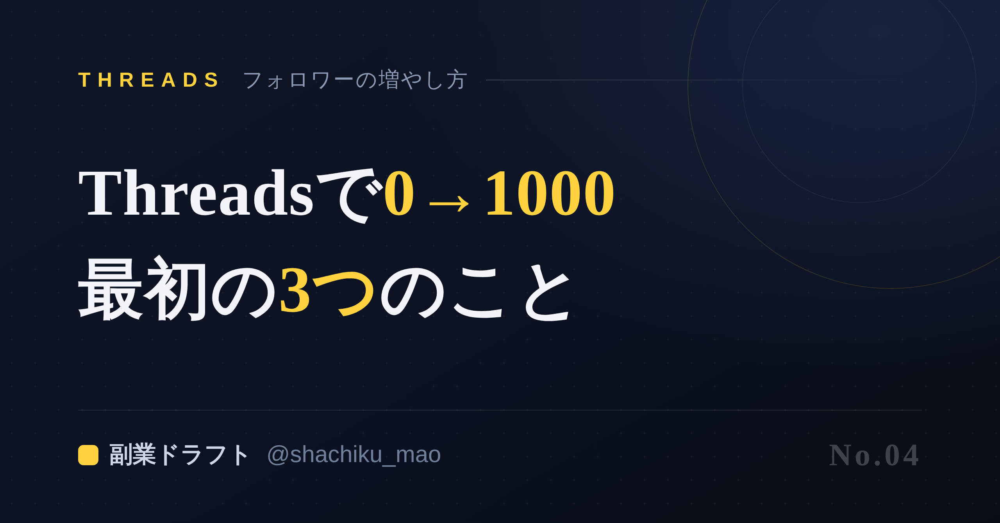
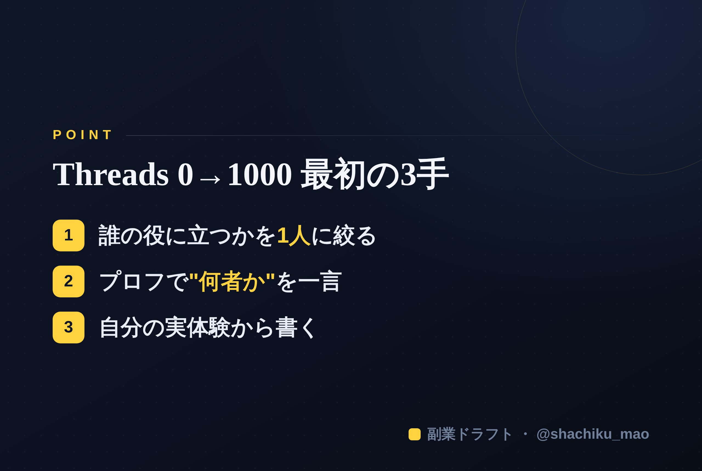

使い方
1. 「タイトルをコピー」→ note のタイトル欄に貼る
2. オレンジのラベルの画像（見出し画像）を note の見出し画像に設定
3. 「本文1をコピー」→ note本文に貼る
4. 青いラベルの位置（本文の途中）に、同じ名前の画像をアップして挿入
5. 「本文2をコピー」→ 続きを貼る
※ 見出しが普通の文字になったら、その行を選んで「大見出し」に設定してください
1. 「タイトルをコピー」→ note のタイトル欄に貼る
2. オレンジのラベルの画像（見出し画像）を note の見出し画像に設定
3. 「本文1をコピー」→ note本文に貼る
4. 青いラベルの位置（本文の途中）に、同じ名前の画像をアップして挿入
5. 「本文2をコピー」→ 続きを貼る
※ 見出しが普通の文字になったら、その行を選んで「大見出し」に設定してください
Threadsで0→1000フォロワー、最初にやるべき3つのこと
見出し画像に設定：note-04.png

「フォロワー0からなんて、もう無理でしょ」——そう思っていませんか。
結論、最初の3手を間違えなければ、0からでも伸びます。 才能でもタイミングでもなく、順番の問題です。今日はその3手を具体的にお話しします。
① 「誰の役に立つか」を1人に絞る
多くの人がここで失敗します。「みんなに役立つ発信」をしようとして、結局誰にも刺さらない。
やるべきは逆で、たった1人の顔を思い浮かべること。「1年前の自分」でも「職場の後輩」でもいい。その人が困っていること、知りたいことに答える。狭く刺せば、同じ悩みの人が集まってきます。
② プロフィールで「何者か」を一言で伝える
フォローされるかどうかは、投稿を見た人がプロフィールに飛んだその3秒で決まります。
- ❌「日々の学びを発信中」→ 何者か分からない
- ⭕「元経理→数字が苦手な人にお金の管理をやさしく伝える」→ 一発で伝わる
「肩書き＋誰の役に立つか」を最初に書く。これだけでフォロー率が変わります。
③ 自分の「実体験」から書く
一般論は、すでに他の誰かが上手に発信しています。あなたが勝てるのはあなたにしかない体験だけ。
「私も昔こうだった」「この失敗から学んだ」——固有のエピソードは、AIにも他人にもコピーできません。ここに共感と信頼が集まります。
続けるコツは「作りだめ」
そして最大の壁は"継続"。毎日ネタを考えていると必ず息切れします。1週間分をまとめて用意しておくだけで、投稿のハードルは劇的に下がります。
本文中に挿入：note-04-body.png（この記事のポイント）

「1人に絞る」「一言プロフィール」「実体験」——この3手を、AIが質問しながら一緒に組み立て、Threadsの投稿とプロフィールまで作ってくれるのが 「副業ドラフト」 です。無料で試せます。
👉 https://note-threadssf.onrender.com
0からの1000は、最初の3手で決まります。